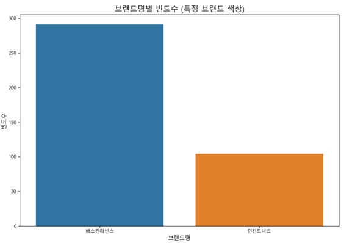
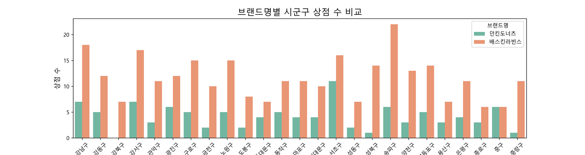
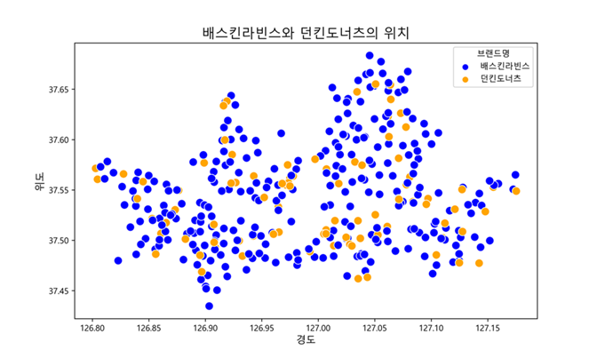

import pandas as pd
file_path = '상가정보_서울_202403.csv'
df = pd.read_csv(file_path, encoding='utf-8')
print("전체 데이터의 행과 열 개수:")
print(df.shape)
print("\n처음 5개의 행:")
print(df.head())
# 4. '브랜드명'별 빈도수
brand_counts = df['브랜드명'].value_counts()
print("\n브랜드별 빈도수:")
print(brand_counts)
# 5. '브랜드명'별 빈도수 비율
brand_ratio = df['브랜드명'].value_counts(normalize=True) * 100
print("\n브랜드별 빈도수 비율(%):")
print(brand_ratio)

import pandas as pd
import platform
from matplotlib import font_manager, rc
import matplotlib.pyplot as plt
def set_korean_font():
if platform.system() == 'Darwin':
rc('font', family='AppleGothic')
elif platform.system() == 'Windows':
font_path = "c:/Windows/Fonts/malgun.ttf"
font_name = font_manager.FontProperties(fname=font_path).get_name()
rc('font', family=font_name)
else:
print("해당 시스템에서는 한글 폰트 설정을 지원하지 않습니다.")
plt.rcParams['axes.unicode_minus'] = False
set_korean_font()
import seaborn as sns
file_path = '상가정보_서울_202403.csv'
df = pd.read_csv(file_path, encoding='utf-8')
brand_counts = df['브랜드명'].value_counts()
colors = ['#1f77b4' if brand == '배스킨라빈스' else
'#ff7f0e' if brand == '던킨도너츠' else '#d3d3d3'
for brand in brand_counts.index]
plt.figure(figsize=(12, 8))
sns.barplot(x=brand_counts.index, y=brand_counts.values, palette=colors)
plt.title('브랜드명별 빈도수', fontsize=16)
plt.xlabel('브랜드명', fontsize=12)
plt.ylabel('빈도수', fontsize=12)
plt.xticks(rotation=0)
plt.show()
import pandas as pd
import seaborn as sns
import matplotlib.pyplot as plt
file_path = '상가정보_서울_202403.csv'
df = pd.read_csv(file_path, encoding='utf-8')
store_counts = df.groupby(['시군구명', '브랜드명']).size().reset_index(name='상점 수')
plt.figure(figsize=(15, 4))
g = sns.barplot(data=store_counts, x='시군구명', y='상점 수', hue='브랜드명', palette='Set2')
g.set_xlabel('시군구명', fontsize=12)
g.set_ylabel('상점 수', fontsize=12)
plt.legend(title='브랜드명', loc='upper right')
plt.xticks(rotation=45)
plt.title('브랜드명별 시군구 상점 수 비교', fontsize=16)
plt.savefig('brand_store_comparison.png', dpi=300)
plt.show()

import pandas as pd
import seaborn as sns
import matplotlib.pyplot as plt
file_path = '상가정보_서울_202403.csv'
df = pd.read_csv(file_path, encoding='utf-8')
df_filtered = df[df['브랜드명'].isin(['배스킨라빈스', '던킨도너츠'])]
plt.figure(figsize=(10, 6))
sns.scatterplot(data=df_filtered, x='경도', y='위도', hue='브랜드명',
palette={'배스킨라빈스': 'blue', '던킨도너츠': 'orange'}, s=100)
plt.xlabel('경도', fontsize=12)
plt.ylabel('위도', fontsize=12)
plt.legend(title='브랜드명', loc='upper right')
plt.title('배스킨라빈스와 던킨도너츠의 위치', fontsize=16)
plt.savefig('baskin_dunkin_locations.png', dpi=300)
plt.show()
pip install folium
import pandas as pd
import folium
file_path = '상가정보_서울_202403.csv'
df = pd.read_csv(file_path, encoding='utf-8')
df_filtered = df[df['브랜드명'].isin(['배스킨라빈스', '던킨도너츠'])]
seoul_map = folium.Map(location=[37.5665, 126.9780], zoom_start=11)
for idx, row in df_filtered.iterrows():
color = 'blue' if row['브랜드명'] == '배스킨라빈스' else 'red'
popup_text = f"{row['상호명']}
{row['도로명주소']}"
folium.Marker(
location=[row['위도'], row['경도']],
popup=folium.Popup(popup_text, max_width=300),
tooltip=row['상호명'],
icon=folium.Icon(color=color)
).add_to(seoul_map)
seoul_map.save('baskin_dunkin_seoul_map.html')
import pandas as pd
import folium
from folium.plugins import MarkerCluster
file_path = '상가정보_서울_202403.csv'
df = pd.read_csv(file_path, encoding='utf-8')
df_filtered = df[df['브랜드명'].isin(['배스킨라빈스', '던킨도너츠'])]
seoul_map = folium.Map(location=[37.5665, 126.9780], zoom_start=11)
marker_cluster = MarkerCluster().add_to(seoul_map)
for idx, row in df_filtered.iterrows():
color = 'blue' if row['브랜드명'] == '배스킨라빈스' else 'red'
popup_text = f"{row['상호명']}
{row['도로명주소']}"
folium.Marker(
location=[row['위도'], row['경도']],
popup=folium.Popup(popup_text, max_width=300),
tooltip=row['상호명'],
icon=folium.Icon(color=color)
).add_to(marker_cluster)
seoul_map.save('baskin_dunkin_seoul_map2.html')